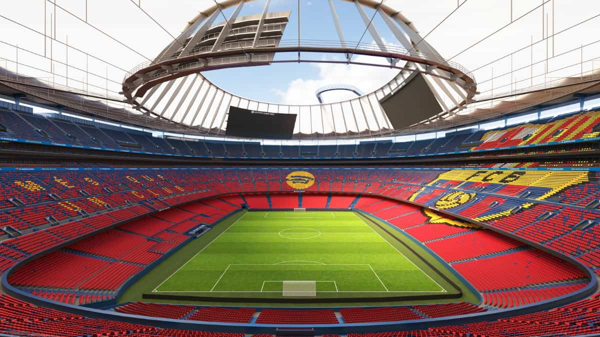

Le Barça de retour au camp nou !
Après 30 mois d’attente, le Barça revient enfin “chez lui” Ce samedi, le FC Barcelone va retrouver son antre mythique : le Spotify Camp Nou. C’est un moment chargé d’émotion, puisque le club n’avait plus joué dans son stade depuis mai 2023, en raison de travaux de rénovation majeurs. Grâce à l’obtention de la licence d’occupation « 1B », le stade pourra accueillir 45 401 spectateurs – une capacité réduite, mais qui marque une étape importante vers la réouverture complète. L’adversaire du jour sera l’Athletic Bilbao en Liga, dans un match symbolique qui scelle le retour des Blaugrana dans leur “nouvelle maison”.
Pour le club, cette réintégration partielle du Camp Nou est aussi un enjeu financier : retrouver les revenus d’un match à domicile dans un stade emblématique pourrait renforcer la stabilité économique du Barça. Enfin, ce samedi ne sera pas simplement un “match comme les autres” : il symbolise une renaissance, un retour aux sources, et l’espoir d’un avenir rayonnant pour le club et ses supporters.